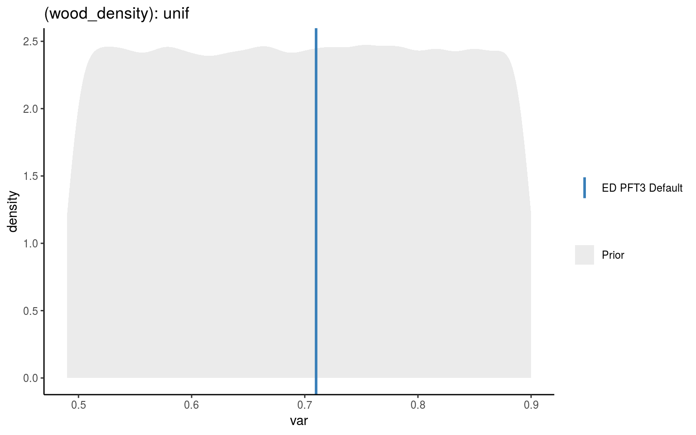
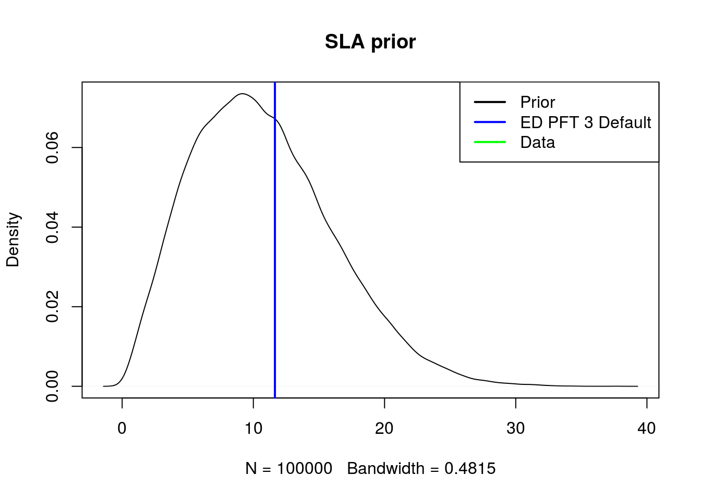

Starting Parameters
[wdns]: Liquid water density
- ED variable name :
wdns - ED variable units:
kg/m3
wdns <- 1.000e3 # Liquid water density [kg/m3][grav]: Gravity
- ED variable name :
grav - ED variable units:
m/s2
grav <- 9.80665 # Gravity acceleration [m/s2][MPa2m]: Conversion from MPa to m
- ED variable name :
MPa2m
MPa2m <- wdns / grav[wood_density]: Wood density
- ED variable name :
rho - ED units:
g cm-3Note! Leaf density is calculated inkg cm-3because that makes perfect sense … - ED variable id: 1000000055
- FATES varaiable name:
WD
In the database, wood_density is unitless.
So I’m assuming it can be directly mapped to our wood_density as such:
\[\frac{WD (gcm^{-2})}{\rho_w(gcm^{-2})} * \rho_w(gcm^{-2}) = \frac{WD (gcm^{-2})}{1(gcm^{-2})} * 1(gcm^{-2})\]
There are multiple priors available for wood density so we are explicitly choosing prior 1000000281 (this was chosen by someone else when the PFT was created.)
wood_density_id <- tbl(bety, "variables") %>% filter(name == "wood_density") %>% pull(id)
wood_density_fit <- tbl(bety, "priors") %>% filter(variable_id == wood_density_id) %>% filter(id == 1000000422) %>% collect()
wood_density_prior <- rdistn(wood_density_fit)
wood_density_default <- get_ED_default(PFT3_defaults_history, "rho")
prior_plot(prior = wood_density_prior,
plot_default = wood_density_default,
title = sprintf("(wood_density): %s", wood_density_fit$distn),
type = "prior")
[SLA]: Specific Leaf Area (SLA)
And subsequently \(LMA = (1/SLA)\)
- ED variable name :
SLA - ED variable id: 15
There are multiple priors available for SLA so we are explicitly choosing prior 142 (this was chosen by someone else when the PFT was created.)
SLA_id <- tbl(bety, "variables") %>% filter(name == "SLA") %>% pull(id)
SLA_fit <- tbl(bety, "priors") %>% filter(variable_id == SLA_id) %>% filter(id == 142) %>% collect()
SLA_prior <- rdistn(SLA_fit)
SLA_default <- get_ED_default("/fs/data3/ecowdery/ED.Hydro/parameters/pft3_defaults_history.xml", "SLA")
prior_plot(prior = SLA_prior,
plot_default = SLA_default,
title = sprintf("(SLA): %s", SLA_fit$distn),
type = "prior")